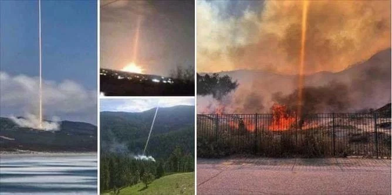

History
California, most prone to having wildfires, have had the most devastating and deadliest wildfires in the most recent years. Northern California’s Camp Fire, the most deadly in the state’s history, and Woolsey and Hill Fires in Southern California are most known for their sudden appearances.
Conspiracy
Many claim that the fires were caused by “directed energy weapons”(DEWs), directed lasers that would destroy homes, property, and lives. This could also be the reason why there were some houses that were not touched by the fires, and others burnt down. The government most likely used these DEWs to test out how powerful the lasers would be before putting them on the battlefield. Others believe that the government targeted many individuals and groups. Americans fear that the government has the ability to manipulate the weather.
